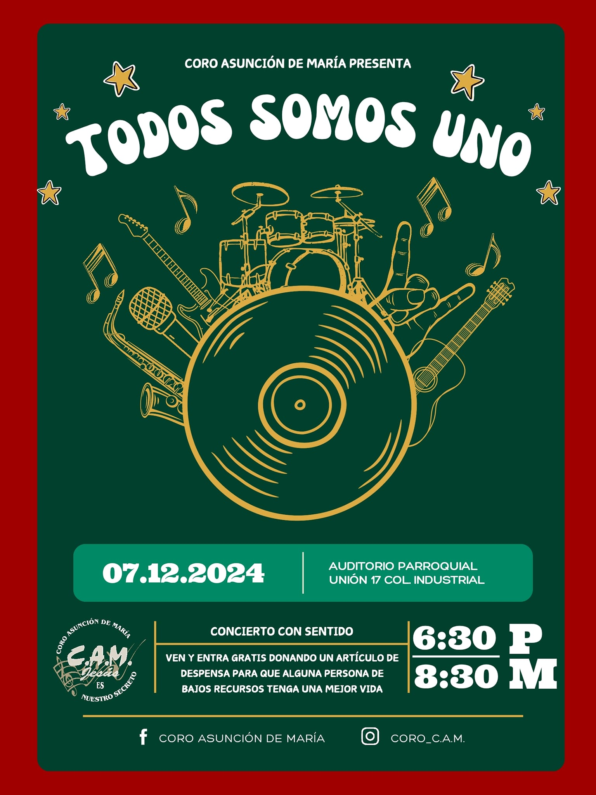
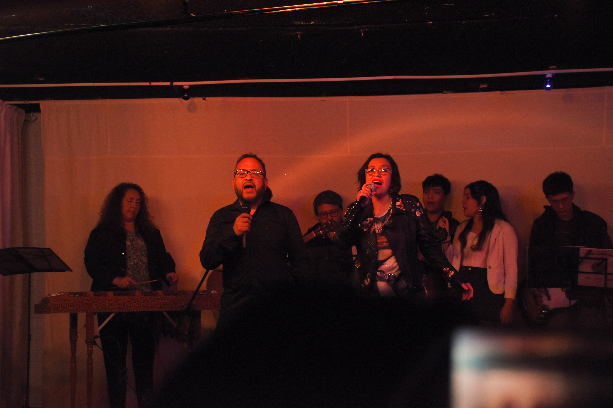
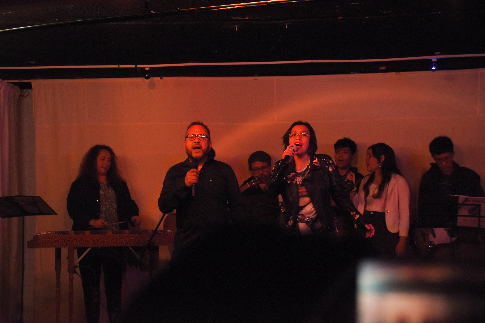
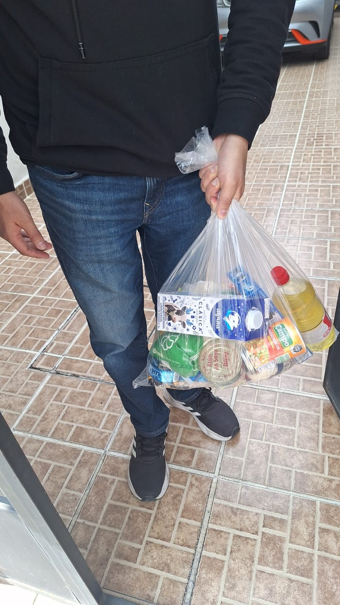
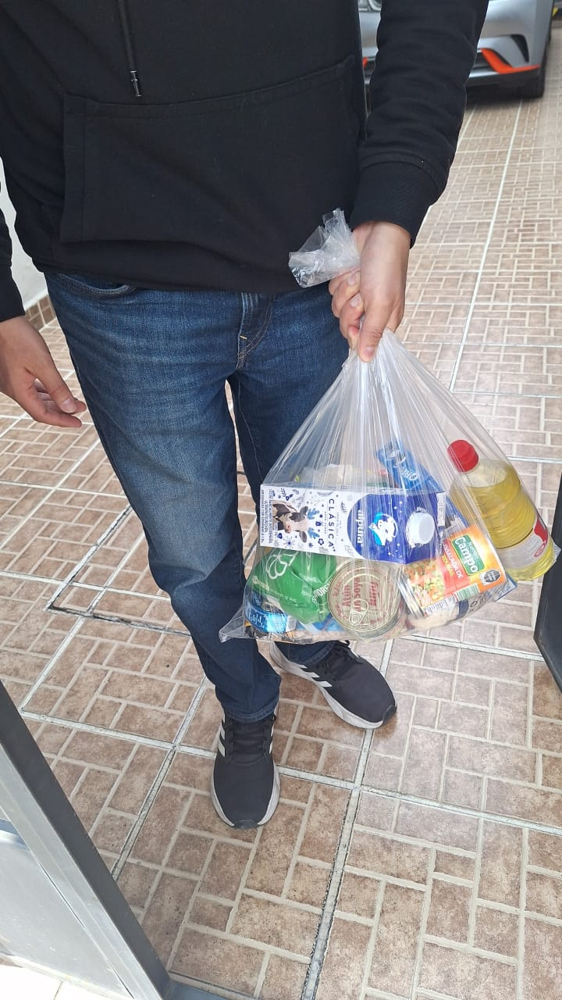
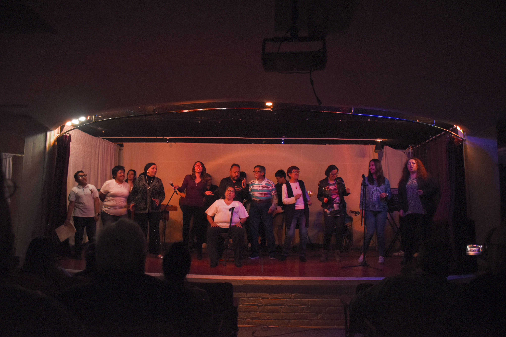
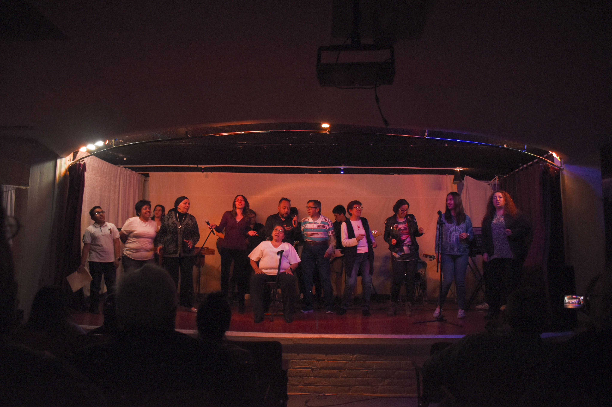
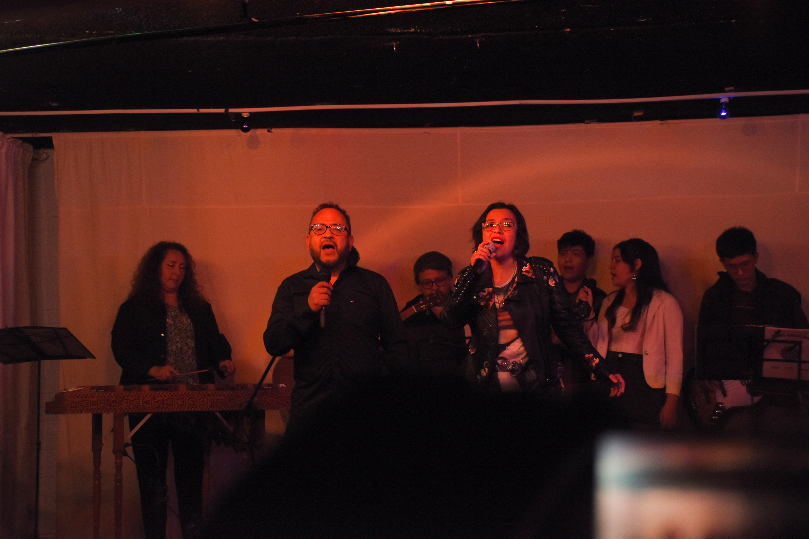
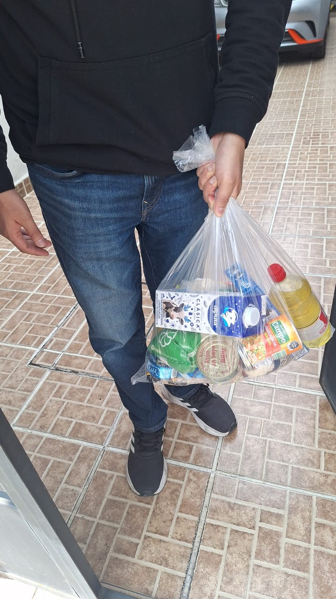
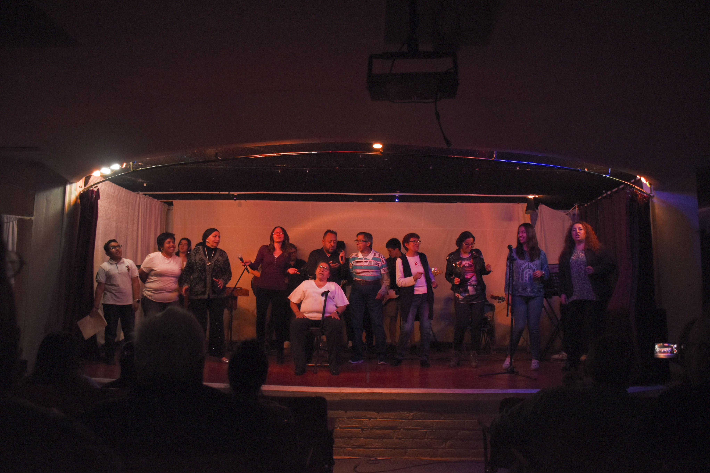

 

 



 




Todos Somos Uno - Diciembre 2024
El 7 de diciembre de 2024, el Coro Asunción de María organizó el concierto con causa "Todos Somos Uno", celebrado en el auditorio del Centro Parroquial Asunción de María.
Este evento tuvo como propósito recolectar despensas para las familias necesitadas de la comunidad de la Asunción, basándose en datos proporcionados por la Operación María de Nazareth.
El concierto fue un tributo al dueto Jesse & Joy, presentando una selección de 10 de sus éxitos.
Video del Evento